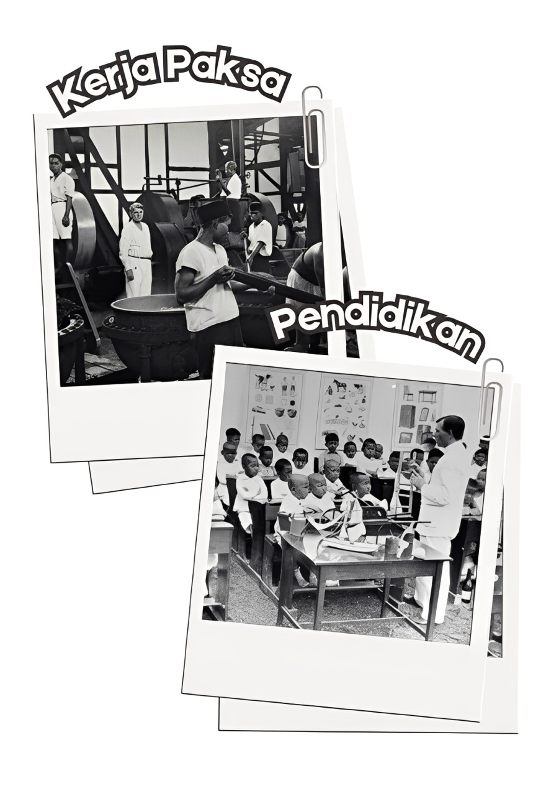

Pekerjaan Pada Masa Kolonial
Pada masa kolonial Belanda terdapat program kerja paksa (seperti membangun jalan pos Anyer-Panarukan dan kerja blandong) dan program kolonisasi (transmigrasi) yang memindahkan penduduk Jawa ke daerah lain untuk bekerja di perkebunan. Kedua sistem ini memicu eksploitasi tenaga kerja dengan upah rendah atau tanpa upah, seringkali mengabaikan kesejahteraan pekerja dan hak anak, meskipun kebijakan juga mulai berkembang untuk mengatur jam kerja.

Pendidikan Kolonial
Selain itu, pada masa kolonial, pendidikan sangat terbatas. Dengan pembagian pendidikan hanya pada orang Belanda, anak-anak bangsawan, pejabat, pegawai kolonial. Mayoritas rakyat tidak memperoleh akses pendidikan karena Belanda memprioritaskan pemenuhan tenaga kerja murah untuk perkebunan dan eksploitasi sumber daya.
Perempuan juga belum memiliki akses pada pendidikan karena ketidaksetaraan gender dan diskriminasi terhadap perempuan. Salah satu peristiwa penting terkait perjuangan pemerataan SDM adalah kisah RA Kartini.
Perempuan juga belum memiliki akses pada pendidikan karena ketidaksetaraan gender dan diskriminasi terhadap perempuan. Salah satu peristiwa penting terkait perjuangan pemerataan SDM adalah kisah RA Kartini.
Perjuangan Kartini Pada Masa Kolonial
▼

Peristiwa-peristiwa penting dalam hidup RA Kartini berfokus pada perjuangannya untuk kesetaraan pendidikan dan emansipasi perempuan, di antaranya adalah mendirikan sekolah perempuan di Jepara, menerbitkan kumpulan surat-suratnya yang berjudul "Habis Gelap Terbitlah Terang", dan ditetapkan sebagai Pahlawan Kemerdekaan Nasional pada 2 Mei 1964 oleh Presiden Soekarno, sekaligus menetapkan tanggal lahirnya, 21 April, sebagai Hari Kartini. Perjuangan R.A. Kartini secara langsung berkaitan dengan persebaran sumber daya manusia (SDM) yang tidak merata, terutama perempuan, karena Kartini menyuarakan pentingnya pendidikan bagi perempuan pribumi. Ia melihat dan melawan ketidaksetaraan gender dan keterbatasan hak perempuan pada masanya, yang menciptakan kesenjangan dalam akses terhadap pendidikan dan perkembangan SDM antara laki-laki dan perempuan, serta antar berbagai lapisan masyarakat.